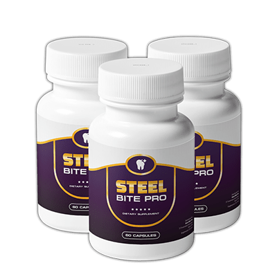
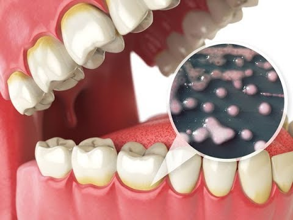

7 Ways to Rebuild Your Teeth, Gums And Get Rid of Tooth Decay
What’s so great about gums?
When it comes to your mouth’s health, it’s not all about how straight your teeth are or how bright your smile is. You can’t forget about your gums! Even if you’re cavity-free and have the pearliest chompers in town, that doesn’t mean you’re immune to gum disease. Since it’s usually painless, most people have no idea that anything is wrong with their gums.
What is gum disease?
Gum disease starts when plaque builds up under and along the gum line. Plaque is a sticky film-like substance that’s filled with bacteria. It can cause infections that hurt the gum and bone, leading to gum disease and tooth decay. Plaque also can cause gingivitis, the earliest stage of gum disease. Gingivitis causes your gums to become:
- inflamed
- tender
- red
- swollen
- prone to bleeding
Fortunately, since the bone and tissue holding the teeth in place aren’t impacted, this damage is reversible.
You can also develop periodontitis, an advanced form of gum disease. Periodontitis impacts the bones that hold your teeth in place. Left untreated, it can ruin the gums, bones, and tissues connected to your teeth.
The final stage of gum disease is advanced periodontitis. This is when the fibers and bone supporting your teeth are destroyed. It can impact your bite, and teeth may need to be removed.
According to the American Dental Association (ADA) , signs that you might have gum disease include:
- consistently bad taste or breath
- separating or loose permanent teeth
- gums that easily bleed
- gums that are swollen, red, or tender
- gums that have pulled away from your teeth
Gum disease is preventable. Here are a few ways you can help keep your gums healthy.
1. Floss
Floss at least once a day. This helps remove the plaque and food that’s beyond your toothbrush’s reach, according to the ADA. It doesn’t matter when you floss. Do it at night, do it in the morning, or do it after lunch… just do it!
2. Get regular dental cleanings
Your dentist can detect early gum disease symptoms if you see them on a regular basis. That way symptoms can be treated before they become more serious. A professional cleaning is the only way to remove tartar. It can also get rid of any plaque you missed when brushing or flossing. If you have gingivitis, brushing, flossing, and regular dental cleanings can help reverse it.
3. Quit smoking
Yet another reason for smokers to quit: Smoking is strongly associated with the onset of gum disease. Since smoking weakens your immune system, it also makes it harder to fight off a gum infection, say the Centers for Disease Control and Prevention (CDC). Plus, smoking makes it more difficult for your gums to heal once they’ve been damaged.
4. Brush twice a day
Brush your teeth after every meal. This helps remove the food and plaque trapped between your teeth and gums. Scrub your tongue too, since it can harbor bacteria. Your toothbrush should have soft bristles and fit in your mouth comfortably, says the Mayo Clinic.
Consider a battery-powered or electric toothbrush. These can help reduce gingivitis and plaque more than manual brushing. Swap toothbrushes or toothbrush heads every three to four months, or sooner if the bristles start to fray.
Try an electric toothbrush today.
5. Use fluoride toothpaste
As for toothpaste, store shelves are lined with brands that claim to reduce gingivitis, freshen breath, and whiten teeth. How do you know which one is best for healthy gums? Make sure to choose toothpaste that contains fluoride and has the ADA seal of acceptance. After that, the flavor and color is up to you!
You can purchase toothpaste that contains fluoride online.
6. Use a therapeutic mouthwash
Usually available over the counter, therapeutic mouthwashes can help reduce plaque, prevent or reduce gingivitis, reduce the speed that tarter develops, or a combination of these benefits, according to the ADA. Plus: A rinse helps remove food particles and debris from your mouth, though it’s not a substitute for flossing or brushing. Look for the ADA seal, which means it’s been deemed effective and safe.
It doesn’t matter whether your brush, floss, or rinse first. Just do a good job and use the right products.
7. Use Steel Brite Pro Supplement
Most people these days face dental problems constantly. Problems like cavities, gingivits, periodontitis, broken teeth, oral cancer, sensitivity, etc are all hard to face. These are very painful and the fear of visiting a dentist is even unbearable.
Most people would try to run away from the problem but it just keeps coming back. No home remedies actually work. The dental sessions in the clinic, surgery, and medicines cost a fortune.
It is better to understand the real reason why you keep suffering from problems constantly. So, a new scientific breakthrough has been made to help you solve the problems of dental health. It is called “Steel Bite Pro“.
What is ‘Steel Bite Pro’?
Steel Bite Pro is an all-natural dietary supplement that has been specially formulated in order to help people rebuild their gums and teeth. It has been made with 29 amazing superfoods that help you reduce the pains and fight against all the dental problems.
The Steel Bite Pro formula has been used by 57,000 people until now and they have all had very effective optimum results in just a few days. The entire product has been manufactured right here in the USA in an FDA approved faculty.
Each and every capsule has been made in the GMP certified facility under the most strict, sterile, and precise standards. It is 100% safe, clean, and has 0 side-effects. Steel Bite Pro helps you experience tons of benefits with a negative problem. It cures the problem of its roots.
What are the benefits of using ‘Steel Bite Pro’ regularly?
There are tons of benefits of using Steel Bite Pro such as:
- It helps to stop the bleeding gums and receding gums.
- It promotes to stop the pain and infections.
- It sets you free from plaque and cavity problems.
- It does not let you suffer from gingivitis and periodontal diseases.
- It sets you free from all the embarrassing moments caused by bad breath.
- It makes your teeth whiter and you won’t have a single cavity.
- It boosts your confidence and makes you proud.
- It makes you smile from within.
- It doesn’t let you go through any kind of dental implants.
- It doesn’t let you go through any nerve damage or paralysis.
- It sets you from visiting the dental clinic again and again.
- It is very safe and has no side-effects.
- It is very affordable.
Imagine that you never ever have to visit the dental clinic again and imagine living your life happily without a single pain or injection.
List of Ingredients:
The ingredients used in the making of Steel Bite Pro are all 100% natural, potent, pure, and effective. All of these have been sourced from the highest and purest places and they have all been tested and proven for purity. Steel Bite Pro contains 23 plants, herbs, minerals, and vitamins such as:
- Berberine: It acts as a powerful antioxidant and it is an anti-inflammatory herb that fights harmful microorganisms, bacteria, viruses, fungi, and parasites.
- Turmeric: It is an antimicrobial herb that removes plaque, bacteria, and fights inflammation effectively.
- Milk Thistle: It reverses the damage caused in the liver by harmful toxicants and detoxifies your mouth.
- Artichoke, Chanca Piedra, and Red Raspberry: These three are a powerful trio that is loaded with vitamins, minerals such as vitamin C, vitamin K, folate, phosphorus, and magnesium. These act as purifying agents that attack mouth infections.
- Yarrow: It increases fibroblasts which are the cells that regenerate connective tissues and helps the body have a speedy recovery from injuries.
- Beetroot: It stops the tooth from developing a cavity. It also provides the salvia healing properties and kills bacteria.
- Dandelion: It provides you with minerals like iron, calcium, magnesium, and potassium.
- Alfalfa: It reduces the sensitivity in your teeth and makes it strong.
- Jujube Seeds: It acts as an antioxidant and has high immune-boosting properties.
- Zinc: It stops the growth of bacterias and plaque. It also boosts your taste buds and sense of smell.
- Chicory Root: It helps boost the effect of other superfoods.
- Celery Seeds: It fights with the production of new bacterias.
- Burdock Root: It protects and supports your overall dental and gum health.
- Yellow Dock: It reduces inflammation and improves mineral absorption.
- Grape Seed Extract: It prevents the growth of foodborne bacteria.
- Ginger: It fights with the bacterias and prevents your teeth from developing an infection.
- Feverfew: It saves you from pain and has no side-effects.
- Methionine and L Cysteine: It detoxifies your body’s process.
The best part about Steel Bite Pro’s ingredients is that all of them have been combined in the perfect quantities and qualities.
They have no side-effects and are all safe to consume. Each and every ingredient is free from additives, fillers, preservatives, or any kind of toxicants.
How does ‘Steel Bite Pro’ work?
Steel Bite Pro formula works amazingly well due to the perfect combinations of the ingredients and their potential. So as soon as you consume the pill, the ingredients start their work. The formula works in 6 powerful steps.
These have been divided powerfully so that they are able to erase the problem from its roots.
These steps are:
STEP 1: As you consume the supplement, the ingredients get absorbed properly and break the existing plaque and will help you fight bacterias.
STEP 2: In step 2, the ingredients will find where the bacterias are and will destroy them. Bleeding and inflammation will also be stopped.
STEP 3: Your gums will be tightened, the wounds will be healed, and the teeth roots will be cemented.
STEP 4: Step 4 is to strengthen your teeth crowns by providing them with essential minerals and vitamins. Also, the cracks will be repaired.
STEP 5: In this phase, your body and mouth especially with be detoxified and purified from the mouth bacterias.
STEP 6: Your process will be completed. You will be orally rejuvenated. The ingredients will act as a shield and will protect you from bacterias and dental problems.
How to consume ‘Steel Bite Pro’ and who can consume it?
Steel Bite Pro can be taken by absolutely everyone. Irrespective of your age, current conditions, and such, Steel Bite Pro works equally for everyone. The reason why these capsules are so safe is that they have no side-effects and risks.
Thus, they are safe for consumption. All you need to do is take 2 capsules daily with a big glass of water whenever you are comfortable.
You will be able to see effective results after three weeks of regular consumption. Also, the results may vary depending upon your body’s capability.
How much does ‘Steel Bite Pro’ cost?
- 1 BOTTLE: Buy one bottle of Steel Bite Pro for just $69 and get free shipping.
- 3 BOTTLES: Buy three bottles of Steel Bite Pro for just $177, $59 per bottle and get free shipping.
- 6 BOTTLES: Buy six bottles of Steel Bite Pro for just $294, $49 per bottle and get free shipping!
PLUS, you will also be provided with a full 60 days 100% money-back guarantee too! So, you can try the product at first and if you are not completely satisfied with it, you can ask for a complete refund.